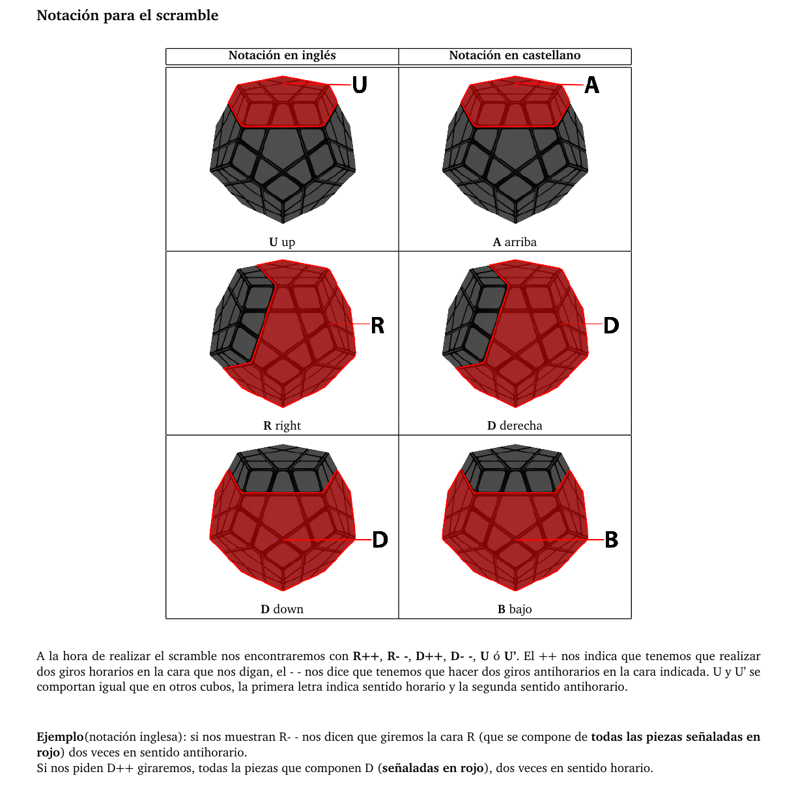
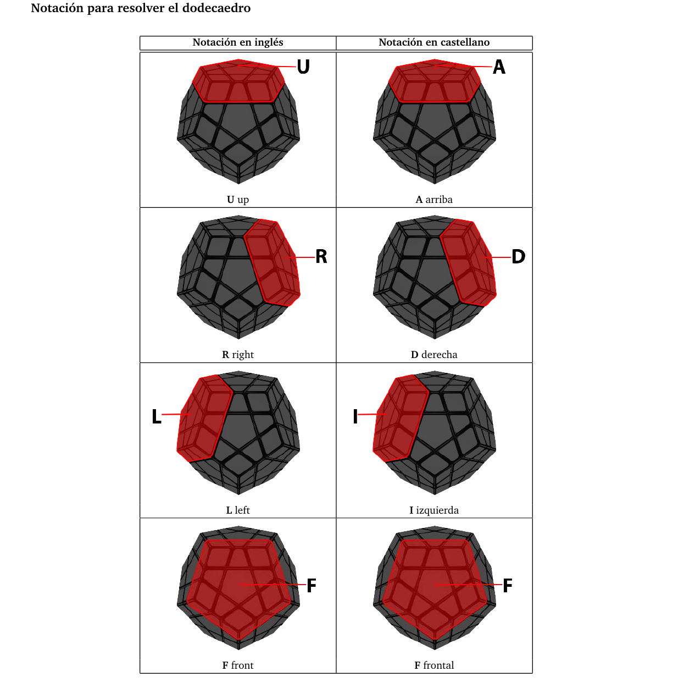

Este dodecaedro al tener varias caras tiene una notacion mas enrevesada ya que hay dos tipos de notacion, una para cuando tienes que deshacer el cubo y otra para cuando tiens que resolverlo
 Aunque parezca mas dificil, este dodecaedro engaña, ya qu es practicamente igual solucionarlo que un cubo normal, la unica diferencia que tiene, obviamente es la forma, y que lleva mas tiempo resolverlo al ser un cubo mas grande, pero por lo demas es practicamente igual que un cubo normal
A continuacion dejo un link para aprender a resolverlo:
SOLUCION